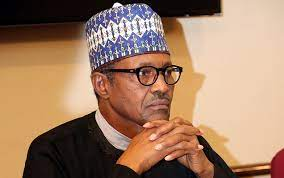
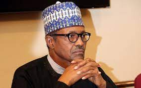

bbb.jpg)
b.jpg)
bb.jpg) 

Muhammadu Buhari GCFR (born 17 December 1933) is a Nigerian politician who has been president of Nigeria since 2015.Buhari is a retired Nigerian Army Major General and has served as military head of state in Nigeria between 1983 to 1985, after taking power in a military coup d'état. The term Buharism is ascribed to the authoritarian policies of his military regime.Buhari has said that he takes responsibility for anything over which he presided during his military rule, and that he cannot change the past. He has described himself as a "converted democrat". Buhari ran for president of Nigeria in 2003, 2007, and 2011. In December 2014, he emerged as the presidential candidate of[8] the All Progressives Congress party for the 2015 general election. Buhari won the election, defeating incumbent President Goodluck Ebele Jonathan. This was the first time in the history of Nigeria that an incumbent president lost a general election. He was sworn in on 29 May 2015. In February 2019, Buhari was re-elected, defeating his closest rival former Vice President Atiku Abubakar by over 3 million votes.
Buhari was born to a Fulani family[12] on 17 December 1942, in Daura, Katsina State, his father was called Mallam Hardo Adamu, a Fulani chieftain, and his mother's name was Zulaihat, who had Hausa and Kanuri ancestry. He is the twenty-third child of his father. Buhari was raised by his mother.He was about four years old when his father died. He attended primary school in Daura and Mai'adua, in 1953, Katsina Middle School, and attended Katsina Provincial Secondary School from 1956 to 1961.
The Vice President, Shri M. Hamid Ansari calling on the President of Nigeria, Mr. Muhammadu Buhari at the State House, in Abuja, Nigeria on September 27, 2016. Buhari enrolled at age 19 in the Nigerian Military Training College (NMTC) in 1962. In February 1964, the college was upgraded to an officer commissioning unit of the Nigerian Army and renamed the Nigerian Defence Academy (NDA) (prior to 1964, the Nigerian government sent cadets who had completed their NMTC preliminary training to mostly Commonwealth military academiesfor officer cadet training).
From 1962 to 1963, Buhari underwent officer cadet training at Mons Officer Cadet School in Aldershot in England. In January 1963, at age 20, Buhari was commissioned a second lieutenant and appointed Platoon Commander of the Second Infantry Battalion in Abeokuta, Nigeria. From November 1963 to January 1964, Buhari attended the Platoon Commanders' Course at the Nigerian Military Training College, Kaduna. In 1964, he facilitated his military training by attending the Mechanical Transport Officer's Course at the Army Mechanical Transport School in Borden, United Kingdom.
From 1965 to 1967, Buhari served as commander of the Second Infantry Battalion and appointed brigade major, Second Sector, First Infantry Division, April 1967 to July 1967. Following the bloody 1966 Nigerian coup d'état, which resulted in the death of Premier Ahmadu Bello. Lieutenant Buhari alongside several young officers from Northern Nigeria, took part in the July counter-coup which ousted General Aguiyi Ironsi replacing him with General Yakubu Gowon.
Buhari was assigned to the 1st Division under the command of Lt. Col Mohammed Shuwa,the division had temporarily moved from Kaduna to Makurdi at the onset of the Nigerian Civil War. The 1st division was divided into sectors and then battalions with Shuwa assisted by sector commanders Martin Adamu and Sule Apollo who was later replaced by Theophilus Danjuma. Buhari's initial assignment was as Adjutant and Company Commander 2 battalion unit, Second Sector Infantry of the 1st Division. The 2 battalion was one of the units that participated in the first actions of the war, they started from Gakem near Afikpo and moved towards Ogoja with support from Gado Nasko's artillery squad. They reached and captured Ogoja within a week with the intention of advancing through the flanks to Enugu, the rebel capital.Buhari was briefly the 2 battalion's Commander and led the battalion to Afikpo to link with the 3rd Marine Commando and advance towards Enugu through Nkalagu and Abakaliki. However, before the move to Enugu, he was posted to Nsukka as Brigade Major of the 3rd Infantry Brigade under Joshua Gin who would later become battle fatigued and replaced by Isa Bukar.Buhari stayed with the infantry for a few months as the Nigerian army began to adjust tactics learnt from early battle experiences. Instead of swift advances, the new tactics involved securing and holding on to the lines of communications and using captured towns as training ground to train new recruits brought in from the army depots in Abeokuta and Zaria.[25] In 1968, he was posted to the 4 Sector also called the Awka sector which was charged to take over the capture of Onitsha from Division 2. The sector's operations was within the Awka-Abagana-Onitsha region which was important to Biafran forces because it was a major source of food supply. It was in the sector that Buhari's group suffered a lot of casualties trying to protect food supplies route of the rebels along Oji River and Abagana.
From 1970 to 1971, Buhari was Brigade Major/Commandant, Thirty-first Infantry Brigade. He then served as the Assistant Adjutant-General, First Infantry Division Headquarters, from 1971 to 1972. He also attended the Defence Services Staff College, Wellington, India, in 1973.From 1974 to 1975 Buhari was Acting Director of Transport and Supply at the Nigerian Army Corps of Supply and Transport Headquarters.In the 1975 military coup d'état, Lieutenant Colonel Buhari was among a group of officers that brought General Murtala Mohammed to power. He was later appointed Governor of the North-Eastern State from 1 August 1975 to 3 February 1976, to oversee social, economic and political improvements in the state. On 3 February 1976, the North Eastern State was divided into three states Bauchi, Borno and Gongola. Buhari then became the first Governor of Borno State from 3 February 1976 to 15 March 1976. In March 1976, following the botched 1976 military coup d'état attempt which led to the assassination of General Murtala Mohammed, his deputy General Olusegun Obasanjo became the military head of state and appointed Colonel Buhari as the Federal Commissioner for Petroleum and Natural Resources (now minister). In 1977, when the Nigerian National Petroleum Corporation was created, Buhari was appointed as its Chairman, a position he held until 1978.During his tenure as the Federal Commissioner for Petroleum and Natural Resources, the government invested in pipelines and petroleum storage infrastructures. The government built about 21 petroleum storage depots all over the country from Lagos to Maiduguri and from Calabar to Gusau; the administration constructed a pipeline network that connected Bonny terminal and the Port Harcourt refinery to the depots. Also, the administration signed the contract for the construction of a refinery in Kaduna and an oil pipeline that will connect the Escravos oil terminal to Warri Refinery and the proposed Kaduna refinery. From 1978 to 1979, he was Military Secretary at the Army Headquarters and was a member of the Supreme Military Council from 1978 to 1979. From 1979 to 1980, at the rank of colonel, Buhari (class of 1980) attended the US Army War College in Carlisle, Pennsylvania, in the United States, and gained a Masters Degree in Strategic Studies.Upon completion of the on-campus full-time resident program lasting ten months and the two-year-long, distance learning program, the United States Army War College (USAWC) college awards its graduate officers a master's degree in Strategic Studies.